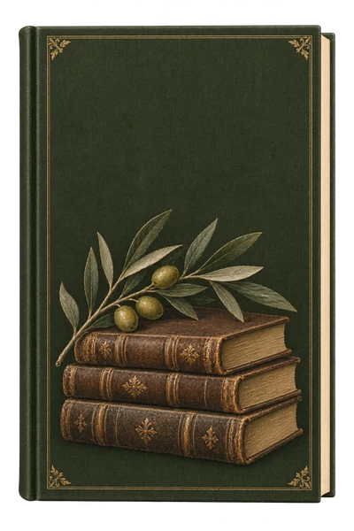
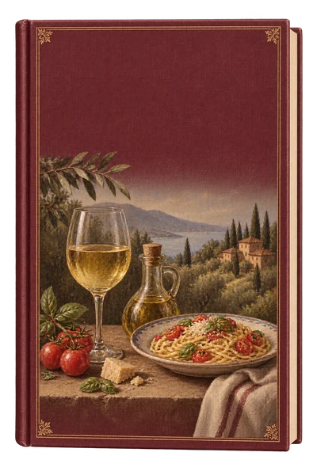
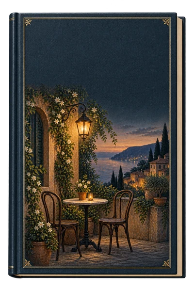
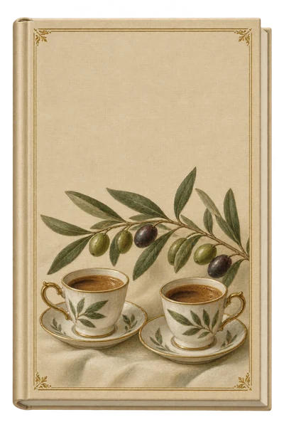

Книги
Несколько историй становятся проводниками в страну.
 Читаем со вкусом
Читаем со вкусом

Книги · еда · атмосфера · разговоры
Путешествуем по странам,
не покупая билет на самолёт.

Несколько историй становятся проводниками в страну.

Пробуем страну на вкус — за одним столом.

Музыка, детали и настроение другой культуры.

Знакомимся и разговариваем. Можно прийти одному или с друзьями.
Это вечер, на который можно прийти за книгой, едой, путешествием или просто хорошей компанией.
Читать все книги необязательно. Домашнего задания тоже нет.

· Санкт-Петербург
На один вечер отправляемся во Францию — через книги, вкусы и истории.
Книги, меню, место и время сообщим с открытием записи. Будет два формата участия — их состав и стоимость пока уточняются.
Узнать об открытии записиМожно прийти одному. Читать все книги необязательно.

Паспорт книжного путешественника
Собирайте страны одну за другой. Книги заканчиваются, а истории и знакомства остаются — вместе с печатью в вашем паспорте.
Наше первое путешествие: итальянская кухня, книги и первый паспорт.
«Почтальонша» · «Ешь, молись, люби» · «Вкус»
24 октября. Новая страна и новая история за общим столом.
Книга, бокал, еда, паспорт, печать и общий стол. Самое важное — люди и живые разговоры.
Здесь появятся фотографии, видео и впечатления участников первой встречи.
Живые материалы скоро добавим. Иллюстрации на сайте передают атмосферу, но не заменяют кадры с мероприятия.
Ничего страшного. Читать все книги необязательно, и домашнего задания нет. Можно слушать и просто прийти поговорить.
Найдём вам компанию. Мы знакомимся и разговариваем за общим столом. Можно прийти одному или с друзьями.
Мы тоже не совсем классический книжный клуб. Это вечер про страну: книги, еду, музыку, детали и живые разговоры.
Это тоже уважительная причина. На вечер можно прийти за книгой, едой, путешествием или хорошей компанией.
Кажется, вы по адресу. Путешествуем по странам, не покупая билет на самолёт.
Хотите узнать о следующем путешествии первыми?
Предзапись ни к чему вас не обязывает. Просто не придётся случайно узнать о новой встрече через три дня после неё.
Книжный клуб по подписке — следующая глава проекта. Одна книга в месяц: можно читать, можно слушать, можно просто прийти поговорить. Подробности — после запуска.
Выберите направление для будущего путешествия.
Выбор пока не отправляется организатору.
Это первая версия сайта. Форму предзаписи подключим после согласования. Сейчас контакты не собираются, оплата недоступна.